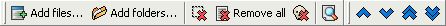

Datoteke
Ova stranica prikazuje popis datoteka koje æe biti preimenovane.
Ikone alatne trake koje se koriste za dodavanje i uklanjanje datoteka s popisa uvijek su prikazane, èak i kada stranica Datoteke nije aktivna.

Ovdje su naredbe:
 Tipka "Dodaj datoteke" prikazuje standardni Windows dijalog gdje možete izabrati datoteke za dodavanje,
pogledajte ovu stranicu za dodatne detalje.
Tipka "Dodaj datoteke" prikazuje standardni Windows dijalog gdje možete izabrati datoteke za dodavanje,
pogledajte ovu stranicu za dodatne detalje. Tipka "Dodaj mape" prikazuje prozor za izbor mapa, to omoguæava dodavanje datoteka i
mapa kao što je opisano na ovoj stranici.
Tipka "Dodaj mape" prikazuje prozor za izbor mapa, to omoguæava dodavanje datoteka i
mapa kao što je opisano na ovoj stranici.- Tipka "Ukloni izabrane datoteke" uklanja iz popisa datoteka koje su odabrane.
- Tipka "Ukloni sve datoteke" briše spisak datoteka
- Tipka "Ukloni nepostojeæe datoteke" uklanja iz popisa datoteke koje ne postoje više na
disku (datoteke koje nedostaju). To se može dogoditi ako ste, na primjer, nakon preimenovanja premjestili neke datoteke Windows Explorerom.
- Tipka "Osvježi pregled" osvježava sadržaj stupca "Pregled" (i prikazuje ga ako
nije veæ vidljiv). Ovaj pregled nije automatski zbog poveæanja performansi.
Kada kliknete desnom tipkom miša na zaglavlja popisa, pojavi se izbornik dopuštajuæi odabir koji stupac mora biti prikazan ili ne od
slijedeæih : Mapa, Naziv datoteke, Putanja, Datoteèni nastavak, Pregled, Velièina, Datum stvaranja, Datum promjene.
Tu su i èetiri tipke koje omoguæavaju premještanje stavki na popisu, da bi promijenili redoslijed preimenovanja. Možete takoðer prevuæi & ispustiti stavke unutar popisa
da im promijenite redoslijed. To se takoðer može napraviti sortiranjem datoteka klikom na zaglavlja stupaca.
Za onemoguæavanje automatskog sortiranja, možete kliknuti desnom tipkom miša na zaglavlja popisa i odaberiti naredbu "Nesortirane stavke".
Zaglavlja se mogu mijenjati i seliti, te mijenjati širinu i poredak stupaca.
Kada kliknete desnom tipkom miša na popis, pojavljuje se izbornik dopuštajuæi (izmeðu ostalog) izbor svih stavki liste.